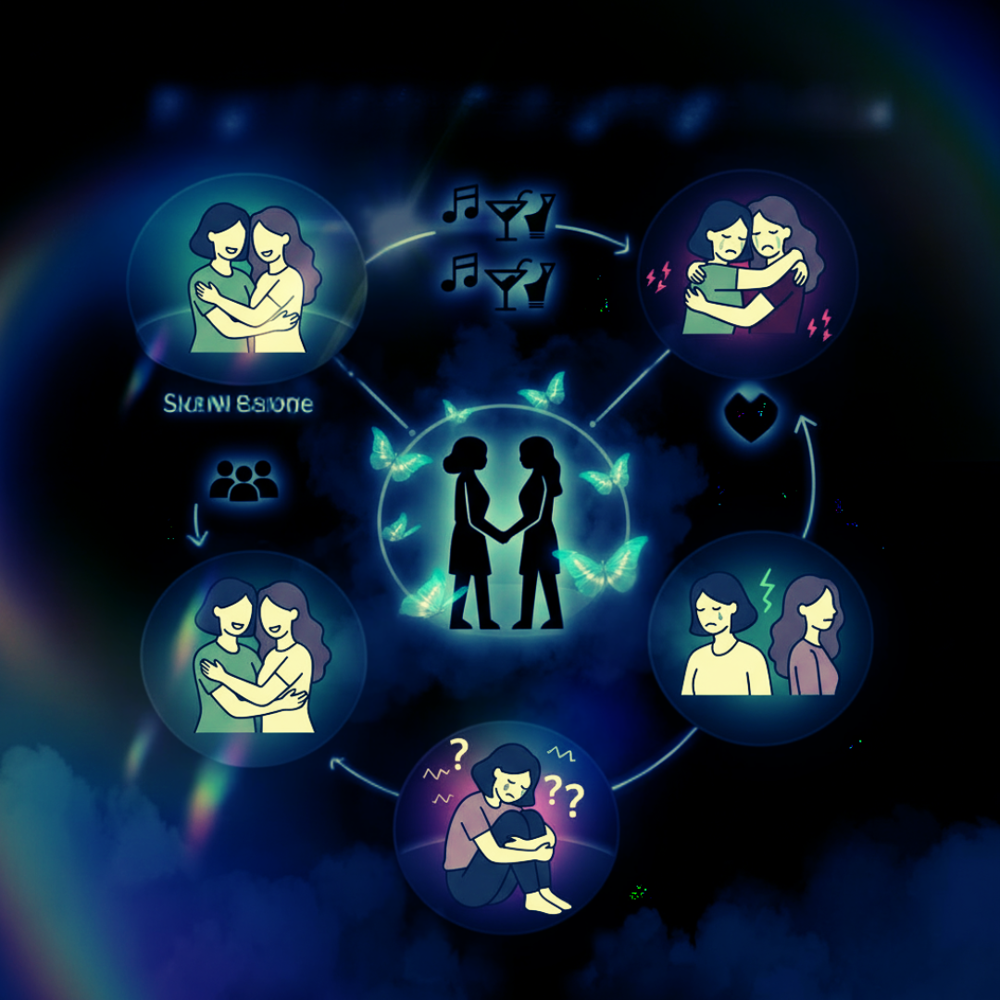
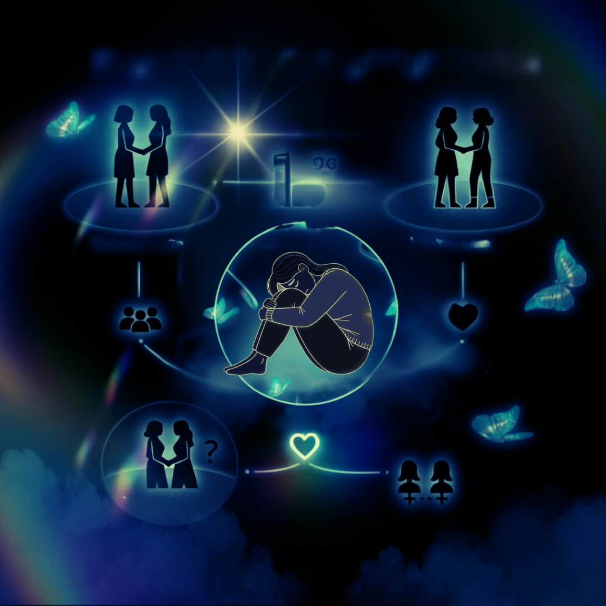
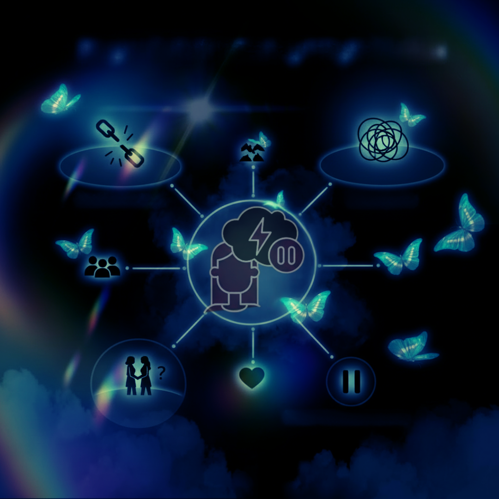

UNBOND ist das erste Selbsthilfeprogramm speziell für lesbische & queere Frauen · WLW, die eine emotional missbräuchliche Beziehung hinter sich lassen. Kein hetero-zentrischer Ratgeber. Kein allgemeines Liebeskummer-Tool. Was du durchmachst, hat einen Namen. Und dem stellen wir uns nun.
Ein Programm, das deine Realität kennt – die kleine Community, die Ex im Freundeskreis, das U-Hauling, die weaponized Queerness.
Das findest du in keinem Ratgeber.

Love Bombing → Abwertung → Versöhnung → Repeat. Dieses Muster wirkt neurobiologisch wie eine Sucht. Dein Gehirn ist nicht schwach – es wurde konditioniert.
Jede Versöhnung flutet dein Gehirn mit Dopamin und Oxytocin – derselbe biochemische Cocktail wie bei einem Drogenkick. Du erkennst das Muster, aber du kommst nicht raus.
Trauma Bonding
In kleinen Communities ist der Dating-Pool eng. No Contact fühlt sich strukturell unmöglich an, wenn deine Ex bei jedem queeren Event auftaucht.
Eingeschränkte Dating-Möglichkeiten, überlappende Freundeskreise, wenig Auswahl – die Dynamiken in der lesbischen Community machen eine Trennung besonders komplex.
Lesbische Trennung
„Das habe ich nie gesagt." „Du bist zu sensibel." „Das bildest du dir ein." Systematische Realitätsverzerrung verändert dein Gehirn – du hörst auf, deiner eigenen Wahrnehmung zu vertrauen.
Die Analyse durch den ToxiCometer kann helfen, die kognitive Dissonanz aufzulösen und das Muster zu erkennen.
GaslightingDu erkennst dich wieder?
UNBOND ist das einzige Programm, das toxische Beziehungen zwischen Frauen direkt adressiert – die kleine Community,
die Ex im Freundeskreis, das U-Hauling, die queere Isolation.
Trauma Bonding lösen. Liebeskummer überwinden. Wieder du selbst werden.
15 Fragen · ca. 2 Minuten · Wähle 0 = trifft nicht zu bis 5 = trifft voll zu
💾 Deine Antworten werden im Browser gespeichert.
Trauma Bonding in lesbischen Beziehungen lösen, das Nervensystem regulieren, die Ex loslassen –
10 Schritte, wissenschaftlich fundiert. Kein hetero-zentrischer Ratgeber. Endlich für dich.
Liebeskummer Hilfe – SOS
TIPP-Protokoll & Trennungsschmerz akut lindern
Nervensystem regulieren
Trauma Bonding lösen – neurobiologisch fundiert
Ex loslassen & Kontaktabbruch
No-Contact als medizinische Notwendigkeit
FRÜHER DRAN · BESSER GESCHÜTZT
Early Bird – nur 14 Tage. Danach gelten die regulären Preise.
UNBOND CORE
UNBOND COMPLETE
BONUS-PAKET
Kein Abo · Einmalzahlung · Sofortiger Zugang · DSGVO-konform · 14 Tage Rückgaberecht
Klicke auf einen Begriff, um die Erklärung zu lesen.
Eine Phase intensiver Zuneigung, überwältigender Komplimente und großzügiger Gesten zu Beginn der Beziehung. Die Täterin überflutet dich mit Aufmerksamkeit, um schnell emotionale Abhängigkeit zu erzeugen – bevor du die ersten roten Flaggen wahrnehmen kannst.
Erkennungsmerkmale
Systematische Manipulation deiner Wahrnehmung, bis du an deinem eigenen Verstand zweifelst. Die Täterin leugnet Ereignisse, verdreht Tatsachen oder behauptet, du seist zu empfindlich. Ziel: deine Realität kontrollieren und dich von deinem eigenen Urteilsvermögen zu trennen.
Erkennungsmerkmale
Eine starke emotionale Bindung, die durch wiederholte Zyklen von Missbrauch und Versöhnung entsteht. Das Gehirn verbindet die seltenen positiven Momente mit intensiver Erleichterung – neurobiologisch stärker als gesunde Bindungen, weil sie auf Überlebensmechanismen basiert.
Erkennungsmerkmale
Belohnungen (Zuwendung, Liebe, Aufmerksamkeit) kommen unvorhersehbar und unregelmäßig – das schafft die stärkste Form der Verhaltenskonditionierung. Dein Gehirn wird süchtig nach den unvorhersehbaren positiven Momenten, ähnlich wie bei einem Spielautomaten.
Erkennungsmerkmale
Das Versprechen einer gemeinsamen Zukunft (Haus, Kinder, Reisen), die niemals realisiert werden soll. Diese Versprechen dienen als „Karotte vor der Nase" – die Hoffnung auf diese Zukunft hält dich gebunden, während sich real nichts ändert.
Erkennungsmerkmale
Das Hinwerfen kleiner, unregelmäßiger Aufmerksamkeiten – gerade ausreichend, um dich bei der Stange zu halten, aber zu wenig für eine echte Beziehung. Du fühlst dich emotional verhungert, bekommst aber nie eine volle Mahlzeit.
Erkennungsmerkmale
Der Versuch, dich nach einer Trennung wieder „einzusaugen" (benannt nach dem Staubsauger Hoover). Ziel: dich zurück in die toxische Dynamik zu ziehen, weil sie narzisstische Zufuhr braucht.
Erkennungsmerkmale
Deny, Attack, Reverse Victim and Offender – Leugnen, Angreifen, Täter-Opfer-Umkehr. Die Täterin leugnet ihr Verhalten, greift dich an und stellt sich selbst als Opfer dar.
Erkennungsmerkmale
Das Hinzuziehen einer dritten Person in die Beziehungsdynamik, um Eifersucht, Unsicherheit und Konkurrenz zu erzeugen. Diese Taktik senkt deinen wahrgenommenen Wert, steigert ihren und hält dich durch Eifersucht unter Kontrolle.
Erkennungsmerkmale
Dritte Personen, die wissentlich oder unwissentlich manipuliert werden, um dich zu kontrollieren, auszuspionieren oder unter Druck zu setzen. Sie glauben oft, zu helfen – unterstützen aber das Manipulationssystem der Täterin.
Erkennungsmerkmale
Wenn du nach langem Missbrauch emotional explodierst und die Täterin genau diese Reaktion als Beweis für deine Instabilität nutzt. Deine normale menschliche Reaktion auf Missbrauch wird gegen dich verwendet.
Erkennungsmerkmale
Die Aufmerksamkeit, Bewunderung oder emotionale Reaktion, die ein Narzisst zum psychischen Überleben braucht. Wichtig: Positive und negative Supply sind gleichwertig – deine Angst, Wut und Tränen nähren sie genauso wie deine Bewunderung.
Erkennungsmerkmale
Eine Verteidigungsstrategie: Du wirst so langweilig und reaktionslos wie ein grauer Kieselstein. Du gibst keine Emotionen, keine persönlichen Informationen preis – und entziehst der Täterin so die Zufuhr, die sie braucht.
Anwendung
Die Täterin sichert sich die nächste Partnerin ab, bevor sie die aktuelle Beziehung beendet – wie ein Affe, der den alten Ast erst loslässt, wenn er den neuen bereits hält.
Erkennungsmerkmale
Die abrupte, oft grausame Entwertung oder Beendigung nach der Idealisierungsphase. Du wirst „weggeworfen" wie ein kaputtes Spielzeug – oft ohne Erklärung, Empathie oder Abschluss.
Erkennungsmerkmale
Die systematische Zerstörung deines Rufs durch gezielte Verbreitung von Lügen und verzerrten Darstellungen. Die Täterin positioniert sich als unschuldiges Opfer, während sie deinen Ruf in der Community zerstört.
Erkennungsmerkmale
Ein Zustand obsessiver, unkontrollierbarer Verliebtheit und emotionaler Abhängigkeit. Wird häufig mit echter Liebe verwechselt – ist aber eine Form der Besessenheit, die in toxischen Beziehungen durch intermittierende Verstärkung künstlich aufrechterhalten wird.
Erkennungsmerkmale
Lesbischer Begriff für das extrem schnelle Zusammenziehen. In toxischen Beziehungen deckungsgleich mit der Love-Bombing-Phase – die Geschwindigkeit verhindert, dass du rote Flaggen rechtzeitig erkennst und dient der schnellen Kontrolle und Isolation.
Erkennungsmerkmale
MedifySolution+
Inhaberin: Milena Isailov-Schöchlin
Ingeborg-Drewitz-Allee 2
79111 Freiburg im Breisgau
Deutschland
E-Mail: [email protected]
Milena Isailov-Schöchlin
Anschrift wie oben
Die Europäische Kommission stellt eine Plattform zur Online-Streitbeilegung (OS) bereit: https://ec.europa.eu/consumers/odr/. Wir sind nicht bereit oder verpflichtet, an Streitbeilegungsverfahren vor einer Verbraucherschlichtungsstelle teilzunehmen.
Die Inhalte dieser Website, einschließlich des ToxiCometer-Tests und des E-Books „UNBOND: Breaking Chains", ersetzen keine professionelle psychologische Beratung, Psychotherapie oder medizinische Behandlung. Alle Informationen dienen der Selbstreflexion und Orientierung. Bei akuten psychischen Krisen wende dich bitte an die Telefonseelsorge (0800 111 0 111, kostenlos, 24/7) oder das Hilfetelefon Gewalt gegen Frauen (116 016).
Die durch die Seitenbetreiberin erstellten Inhalte und Werke auf dieser Website unterliegen dem deutschen Urheberrecht. Die Vervielfältigung, Bearbeitung, Verbreitung und jede Art der Verwertung außerhalb der Grenzen des Urheberrechts bedürfen der schriftlichen Zustimmung der Autorin. Infografiken und Texte sind urheberrechtlich geschützt. © 2026 Milena [Nachname] / UNBOND.
UNBOND: Breaking Chains ist ein digitales Selbsthilfe-Informationsprodukt (E-Book) und kein Fernunterricht im Sinne des Fernunterrichtsschutzgesetzes (FernUSG). Es findet keine individuelle Lernerfolgskontrolle statt. Das Produkt dient der eigenverantwortlichen Selbstreflexion.
MedifySolution+, Inhaberin: Milena Isailov-Schöchlin · Ingeborg-Drewitz-Allee 2 · 79111 Freiburg im Breisgau
E-Mail: [email protected]
Der ToxiCometer-Test verarbeitet keine personenbezogenen Daten. Deine Eingaben werden nicht gespeichert und nicht übertragen.
Wenn du deine E-Mail-Adresse im Opt-in-Formular angibst, wird diese ausschließlich zur Zusendung des angeforderten Reports und ggf. weiterer Inhalte verwendet. Eine Weitergabe an Dritte findet nicht statt.
Diese Seite verwendet Google Fonts. Beim Laden der Schriften wird eine Verbindung zu Google-Servern hergestellt. Dabei können IP-Adressen übermittelt werden. Grundlage ist Art. 6 Abs. 1 lit. f DSGVO (berechtigtes Interesse an einer ansprechenden Darstellung). Eine lokale Einbindung der Schriften ist in Planung.
Diese Website verwendet <